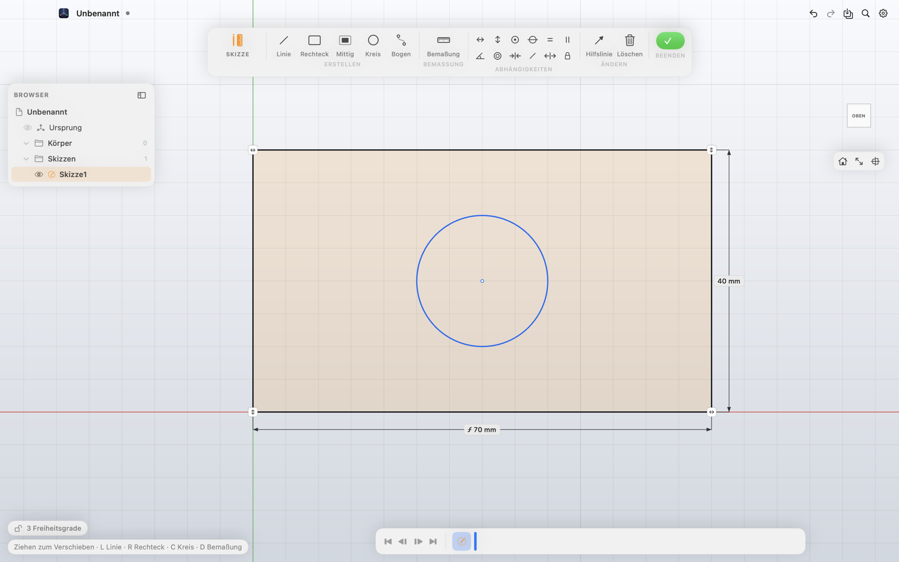
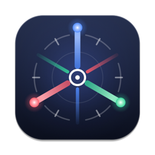
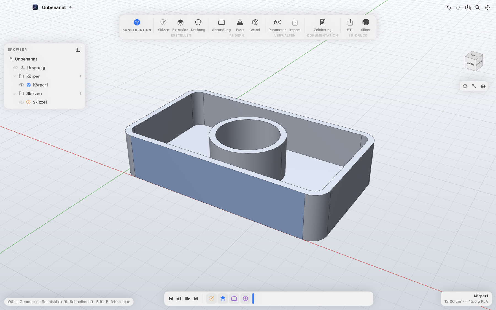
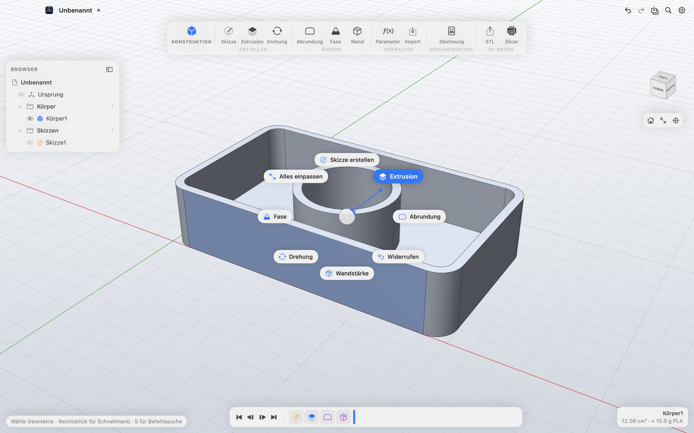
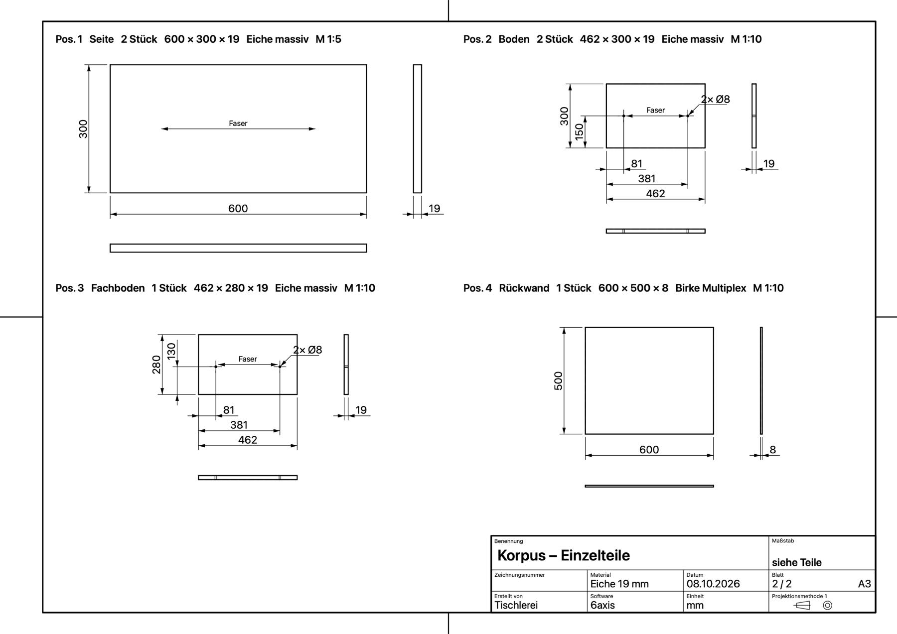

Konstruieren
Skizzen mit Abhängigkeiten und Maßen, die du direkt beim Zeichnen eintippst. Extrusion, Drehung, Abrundung, Fase und Wandstärke. Jeder Schritt bleibt in der Zeitleiste änderbar, Parameter wie breite / 2 rechnen mit.


6axis Herunterladen6axis ist ein kostenloses CAD-Programm für den Mac. Du skizzierst und konstruierst wie in Fusion 360 – und bekommst die bemaßte Zeichnung, die Stückliste und die STL für den Drucker gleich mit. Offline, ohne Konto, Open Source.
Kostenlos für Macs mit Apple Silicon (M1 oder neuer) ab macOS 15.

Skizzen mit Abhängigkeiten und Maßen, die du direkt beim Zeichnen eintippst. Extrusion, Drehung, Abrundung, Fase und Wandstärke. Jeder Schritt bleibt in der Zeitleiste änderbar, Parameter wie breite / 2 rechnen mit.

STL und STEP exportieren oder das Teil mit einem Klick in PrusaSlicer, Bambu Studio, OrcaSlicer oder Cura öffnen. Volumen und Gewicht siehst du sofort – für PLA, PETG, ABS und mehr.

Die technische Zeichnung entsteht nebenbei: drei Ansichten nach Norm, Bezugsmaße, Bohrungen, Radien und Fasen, Schnitt und Einzelheiten. Dazu Stückliste mit Zuschnittmaßen, Einzelteilblätter und DXF im Maßstab 1:1 für CNC und Laser.

6axis ist ohne kostenpflichtiges Apple-Entwicklerkonto gebaut und deshalb nicht von Apple notarisiert. Beim ersten Start fragt macOS deshalb einmal nach.
Im Terminal geht der letzte Schritt auch so:xattr -dr com.apple.quarantine /Applications/6axis.app
6axis steht unter der MIT-Lizenz: Du darfst es nutzen, weitergeben und verändern. Der Quellcode liegt auf GitHub, Mitmachen ist ausdrücklich erwünscht. Fehler und Ideen meldest du in der App unter Hilfe → Fehler melden oder direkt als Issue.
Die Geometrie rechnet Open CASCADE Technology, gezeichnet wird mit Metal – alles läuft auf deinem Mac, ohne Internet und ohne Konto.